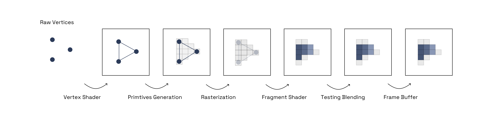

Three.js
By Lance Nickel
IGS 2023
What is Three.js
Three.js is a cross-browser JavaScript library and API used to create and display animated 3D computer graphics in a web browser using WebGL. Three.js scripts may be used in conjunction with the HTML5 canvas element, SVG or WebGL.
What is WebGL?
WebGL is a low-level graphics API for rendering interactive 3D and 2D graphics within any compatible web browser without the use of plug-ins. It is based on OpenGL
WebGL History
Evolved out Canvas 3D experiments at Mozilla
A low-level graphics API to render graphics without plugins in the browser
Based off of OpenGL
Uses the GPU
Graphics can be mixed with other HTML elements on the page
Incredibly complex but incredibly fast
WebGL Pipeline
To render graphics with WebGL we have to follow specific steps.
Javascript - Creating Data
- Initialize WebGL
- Create Arrays
- Buffer Objects
- Shaders
- Attributes
- ...
Vertex Shader
- Vertex Shader is executed for each vertex provided in the buffer object
- Calculates position of each vertex
- Calculates color, textures
Primitive Assembly
- Triangles are created and passed to the rasterizer
Rasterization (pixels are determined)
- Culling - Orientation is determined and any triangle not in the visible are discarded
- Clipping - Any triangles that are partly outside of the view are removed
Fragment Shader
- Data from the vertex shader in varying variables
- Primitives from the rasterization stage, and then
- Calculates the color values for each pixel between the vertices
Testing Blending
- Takes the fragment shader output and combines it with colors in the current framebuffer to render transparency and translucency effects.
Frame Buffer
- The final color values are written to the frame buffer
- Stores the frame of data in the GPU memory
- The data is then displayed on the screen

WebGL Example
Ugh too much code!!! 🤯
While WebGL offers great performance it can be daunting to construct 3D graphics. Imagine having to add lights, camera etc...
I wish there was something out there to make it easier!
Three.js
Three.js is a cross-browser JavaScript library and API used to create and display animated 3D computer graphics in a web browser using WebGL. Three.js scripts may be used in conjunction with the HTML5 canvas element, SVG or WebGL.
Three.js is often confused with WebGL since more often than not, but not always, three.js uses WebGL to draw 3D
Released by Ricardo Cabello on GitHub in April 2010
Originally written in Actionscript then ported over to Javascript
It abstracts away complex code from WebGL
Three.js Structure
- The Renderer is the main object of three.js. You pass a Scene and a Camera to a Renderer and it renders (draws) the portion of the 3D scene that is inside the frustum of the camera as a 2D image to a canvas.
-
There is a scenegraph. This is a tree-like structure of objects
consisting of various objects like a Scene object, multiple Mesh
objects, Light objects, Group, Object3D, and Camera objects
Note in the diagram Camera is half in half out of the scenegraph. This is to represent that in three.js, unlike the other objects, a Camera does not have to be in the scenegraph to function. Just like other objects, a Camera, as a child of some other object, will move and orient relative to its parent object. - Mesh objects represent drawing a specific Geometry with a specific Material
- Geometry objects represent the vertex data of some piece of geometry like a sphere, cube, plane, dog, cat, human, tree, building, etc...
- Material objects represent the surface properties used to draw geometry including things like the color to use and how shiny it is.
- Texture objects generally represent images either loaded from image files, generated from a canvas or rendered from another scene.
- Light objects represent different kinds of lights.

Three.js Benefits
Easy to Learn
Vast Amount of Examples
Large Community
Good Documentation
Great Performance
Support for Most Popular Model Formats
Three.js Disadvantages
A certain level of programming knowledge is needed
Out of the box the docs are geared towards modern frontend tools
Can be overkill for simple animation needs
Three.js Example
index.html
<!DOCTYPE html>
<html lang="en">
<head>
<meta charset="UTF-8">
<meta name="viewport" content="width=device-width, initial-scale=1.0">
<title>Document</title>
<script src="https://cdnjs.cloudflare.com/ajax/libs/dat-gui/0.5.1/dat.gui.min.js"></script>
<script type="importmap">
{
"imports": {
"three": "https://unpkg.com/three@0.159.0/build/three.module.js",
"three/addons/": "https://unpkg.com/three@0.159.0/examples/jsm/"
}
}
</script>
<style>
body { margin: 0; }
</style>
</head>
<body>
<script type="module" src="main.js"></script>
</body>
</html>
main.js
/* Import Three */
import * as THREE from 'three';
/* Create Scene and Camera */
const scene = new THREE.Scene();
const camera = new THREE.PerspectiveCamera( 40, window.innerWidth / window.innerHeight, 1, 10000 );
camera.position.z = 6;
/* Create Renderer */
const renderer = new THREE.WebGLRenderer({antialias: true});
renderer.shadowMap.enabled = true;
renderer.shadowMap.type = THREE.PCFSoftShadowMap;
/* Set Size and Add Renderer to DOM */
renderer.setSize( window.innerWidth, window.innerHeight );
document.body.appendChild( renderer.domElement );
/* Create Cube */
const geometry = new THREE.BoxGeometry( 1, 1, 1 );
const material = new THREE.MeshStandardMaterial( { color: 0xFFA500 } );
const cube = new THREE.Mesh( geometry, material );
cube.castShadow = true; //default is false
cube.receiveShadow = false; //default
/* Add Cube to Scene */
scene.add( cube );
/* Create Plane */
const plane_geo = new THREE.PlaneGeometry( 4, 4);
const plane_mat = new THREE.MeshStandardMaterial( {color: 0xfff332, side: THREE.DoubleSide} );
const plane = new THREE.Mesh( plane_geo, plane_mat );
plane.rotateX(Math.PI / 180 * -80);
plane.position.set(0, -1, 0);
plane.receiveShadow = true;
/* Add Plane to Scene */
scene.add( plane );
/* Create Directional Light */
const dir_light = new THREE.DirectionalLight(0xffffff, 5);
dir_light.position.set(1, 1, 1).normalize();
dir_light.castShadow = true;
scene.add(dir_light);
/* Create Point Light */
const light = new THREE.PointLight( 0xFFA500);
light.position.set( 10, 0, 25 );
scene.add( light );
/* Set up shadow properties for the light */
dir_light.shadow.mapSize.width = 512; // default
dir_light.shadow.mapSize.height = 512; // default
dir_light.shadow.camera.near = 0.2; // default
dir_light.shadow.camera.far = 900; // default
renderer.physicallyCorrectLights = true;
/* Animate */
function animate() {
requestAnimationFrame( animate );
cube.rotation.x += 0.01;
cube.rotation.y += 0.01;
renderer.render( scene, camera );
}
animate();
Final
Three.js in the Wild
https://cornrevolution.resn.global/
Three.js Resources
Three.js Possibilities
Three.js and D3 for Data Viz
See the Pen 3D-Chart by Paul (@prisoner849) on CodePen.
See the Pen d3 3D Treemap by Bill White (@billdwhite) on CodePen.